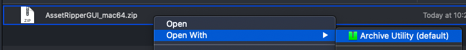

Running AssetRipper on macOS
⚠️ Disclaimer: The project developer does not have access to a Mac. This guide is community-contributed and might be outdated.
This guide will help you run AssetRipper on macOS. Before proceeding, ensure you have all the necessary requirements.
Running the GUI Version
Step 1: Download AssetRipper
Download the GUI release from the AssetRipper downloads page.
Choose
AssetRipper_mac_x64.ziporAssetRipper_mac_arm64.zip, depending on your computer architecture. M2 processors are arm64.
Step 2: Extract the Archive
Right-click the downloaded file and select "Open" to extract its contents.

You should now see a folder named
AssetRipper_mac_x64.
Inside this folder, you'll find various files, including the AssetRipper executable.
Step 3: Open Terminal in the AssetRipper Folder
Select the
AssetRipper_mac_x64folder.Go to
Finder>Services>New Terminal at Folder.
Step 4: Run AssetRipper
- In the Terminal, enter the following command:
./AssetRipper.GUI.Free
- You may encounter a "Permission denied" error.

- To fix this, enter the following command:
chmod +x AssetRipper.GUI.Free
- Now, try running AssetRipper again:
./AssetRipper.GUI.Free
Step 5: Handle Security Prompts
- You may see a security prompt. Click "Cancel" for now.

- Open System Preferences (⌘ + Space, search for "System Preferences").
- Go to "Security & Privacy" > "General" tab.
- At the bottom, click "Allow Anyway" for AssetRipper.

- Run the
./AssetRipper.GUI.Freecommand again in Terminal. - Click "Open" when prompted.

- You may see additional security prompts. Click "OK" and allow them as needed.


Step 6: AssetRipper GUI
After completing these steps, the AssetRipper GUI should open:

Reopening AssetRipper
Once you've gone through the initial setup, you can easily reopen AssetRipper:
- Navigate to the
AssetRipper_mac_x64folder. - Double-click the
AssetRipper.GUI.Freefile to launch the application.
Congratulations! You've successfully set up and run AssetRipper on macOS.